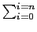
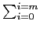
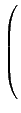
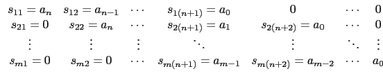
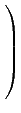
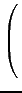
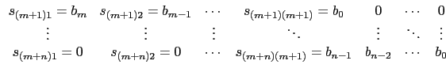
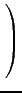

suivant: Résultant de deux polynômes
monter: Arithmétique des polynômes
précédent: Suites de Sturm :
Table des matières
Index
Matrice de Sylvester de deux polynômes : sylvester
sylvester a comme arguments deux polynômes.
sylvester renvoie la matrice S de Sylvester des deux polynômes.
Pour deux polynômes
A(x) = aixi et
B(x) = bixi, la matrice S de Sylvester est une matrice
carrée de dimensiom m+n dont les m=degree(B(x)) premières
lignes sont composées à partir des coefficients de A(x) :

et les n=degree(A(x)) lignes suivantes sont composées de la même
façon à partir des coefficients de B(x) :

On tape :
sylvester(x^3-p*x+q,3*x^2-p,x)
On obtient :
[[1,0,-p,q,0],[0,1,0,-p,q],[3,0,-p,0,0], [0,3,0,-p,0],[0,0,3,0,-p]]
On tape :
det([[1,0,-p,q,0],[0,1,0,-p,q],[3,0,-p,0,0], [0,3,0,-p,0],[0,0,3,0,-p]])
On obtient :
-4*p^3-27*q^2
Documentation de giac écrite par Renée De Graeve